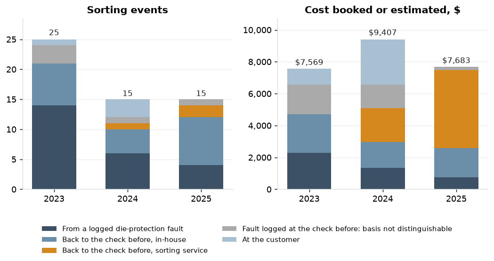
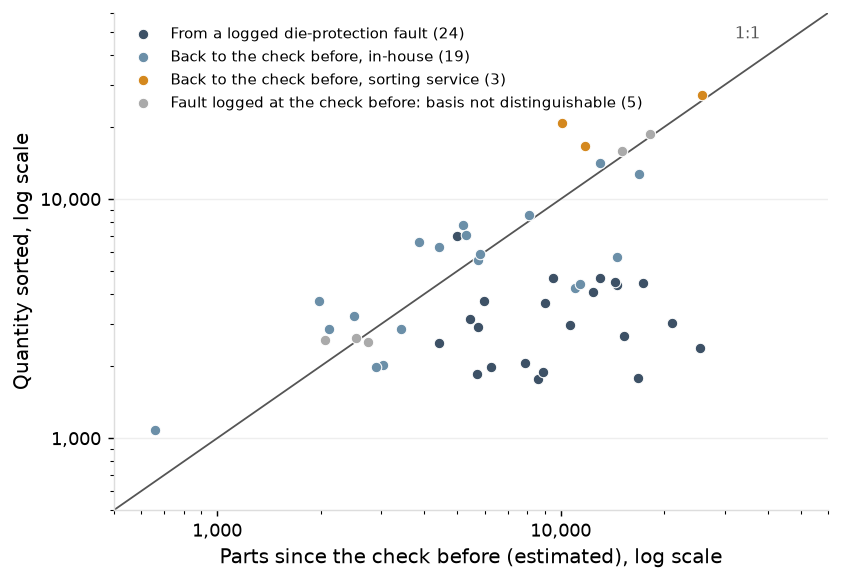
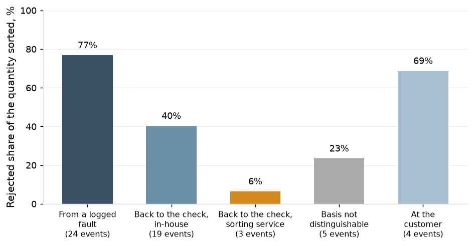

Progressive-die metal stamper, about 110 employees, eleven presses, one plant; IATF 16949 certified. The record from 1 January 2023 to 31 December 2025: the redesign on PR-03, PR-06 and PR-09 (the pilot presses) from 3 February 2025, per-stroke monitoring there from 5 May 2025, and the other eight presses from 2 September 2025; SPC software, press monitor historian, ERP, QMS, die maintenance log, calibration system, accounting and gauge study worksheets. Dimensions in millimetres, tonnage in kN, costs in US dollars. PPAP elements 7, 8 and 11; IATF 16949 9.1.1.1.
Created by Brian Davis, 2026
1. Findings
Per-stroke monitoring. On the pilot presses the per-stroke charts stopped the press 112 times from 5 May to 31 December 2025; the toolmaker found a worn or chipped punch on 70, slug pulling on 24 and nothing on 18 (0.88 per 1,000,000 strokes) (Section 4).
Punches. 70 of the 70 punch replacements followed a stop and none followed nonconforming parts; every one of the 13 punch breaks was stopped on the stroke of the break. Parts made between a nonconformance arising and its finding fell from a median 5,990 under the hourly check to one stroke at the breaks (Section 4).
Sorting. Sorting events on the pilot presses fell from 7 to 5 (p = 0.77) and the quantity sorted from 29,184 to 11,929 (Section 5).
Customer PPM. PPM on the pilot presses' parts fell from 389 to 118 (p = 0.0046 on complaint counts); against 2023's 198 the fall is not significant (p = 0.45) (Section 5).
Scrap and rework. Scrap and rework on the pilot presses fell from 2.60% to 1.69% of revenue (Section 5).
Capability. Production Ppk on the pilot presses' 83 critical formed characteristics rose from 1.00 (0.95 to 1.07) to 1.43 (1.38 to 1.45), and Cpk from 1.64 to 1.75 (Section 5).
Signals. Alarm signals on the pilot presses fell from 15.1 to 4.4 per 100 subgroups, with an acknowledgement or adjustment recorded on 99% against 64% (Section 5).
Measurement, adjustment and recording. After rebuild the two reworked check fixtures stand at 7.7% and 9.5% of tolerance; the burr check agrees with the burr gauge on 92% of calls; under the reaction plan the within-coil autocorrelation on the adjusted characteristics is 0.04; and 2.1% of gauge-connected subgroups are entered more than 20 minutes after the parts (Section 3).
The other presses. The comparison presses moved within their 2024 intervals on every measure; over four months the rollout presses moved in the pilot presses' direction on four measures of six (Section 5).
2. The redesign by characteristic class
In force on PR-03, PR-06 and PR-09 from 3 February 2025, with per-stroke monitoring from 5 May 2025, and on the other eight presses from 2 September 2025.
Characteristic class
Chart
Scheme
Limits
Characteristics, 31 December 2025
Critical
Subgroups used, median
Coil changes spanned, median
Formed height and bend angle
three-way chart
Subgroup means on an individuals chart with limits from the moving range of the baseline means, and a range chart
Baseline of at least 25 subgroups spanning at least five coil changes; recomputed after each sharpening; a coil-change subgroup with a centring step when its mean is outside one sigma of target
106
83
166
5
Hole diameter
tool-wear chart
Centre line on the regression of diameter on shots since sharpening, limits about the line
The die's earlier sharpening intervals; recomputed on a planned trigger
14
14
586
Hole position, length, width and flatness
X-bar and R
Means and range charts
Stable 25-subgroup baseline after each sharpening, held until the next
76
31
25
Burr against the limit sample; hole diameter by pin gauge
attribute check
Accept or reject
New limit samples; operators qualified against the burr gauge
50
0
Burr height on the laboratory gauge
no chart: sharpening count
No chart
Controlled by the sharpening count, set from the die's burr line
30
0
Every chart carries a written reaction plan (897 characteristics; the steps are in Appendix 1): rule 1 on the means and range charts alarms at the press, rules 2 to 4 on the means chart are shown and reviewed weekly, and a die adjustment follows a signal or a coil-change subgroup and is recorded. Check frequency is 30 minutes on critical punched and formed characteristics on the high-speed presses and hourly on the medium presses, with the coil-change check in addition. The burr attribute check runs every 30 minutes on the three pilot presses against the master's 60; on PR-03 the critical variable characteristics also run at 30 minutes. Per-stroke monitoring applies to every die on the press: the EWMA on the per-stroke total and the channel share charts run on PR-03, PR-06 and PR-09 from 5 May 2025. Burr is checked at the press as an attribute against the limit samples (30 characteristics) and read on the burr gauge in the lab as a variable (30 characteristics), and the burr gauge characteristics carry no limit set in the software.
3. Measurement, adjustment and recording after the redesign
The two reworked check fixtures stand at 7.7% and 9.5% of tolerance after rebuild (ndc 20 and 12), with reproducibility down to 9% and 15% of the gauge variance. The burr check agrees with the burr gauge on 92% of calls (kappa 0.78, 0.67 to 0.88) against 80% (kappa 0.44) at the assessment.
Figure 1. Each column is one gauge R&R study on a check fixture, with %GRR of tolerance and ndc at its top. The dashed lines are at 10% and 30%. Both reworked fixtures are under 10% of tolerance after rebuild, as they were at PPAP.
Figure 2. Each point is one operator's share of the 50 parts rejected over 2 trials, and the vertical line is the share the burr gauge rejects. Operators are in the same order in both panels, by their reject rate at the assessment. After the new limit samples and qualification all 6 operators reject within 7 points of the gauge.
Under the reaction plan every recorded adjustment follows a rule 1 alarm (2,776) or a coil-change subgroup (49), and 96.7% of alarms carry one. The negative autocorrelation of 2024 is gone: 0.04 (0.02 to 0.07) on the characteristics adjusted at the press against -0.15 before, with -0.05 on the other characteristics in the same months and -0.07 on them in 2024.
Figure 3. Each point is the lag-1 autocorrelation of subgroup means within a run and coil with its 95% interval; the dashed line is zero. The upper pair is 2024 and the lower pair the pilot presses from March to December 2025. The characteristics adjusted at the press move from below the others to above zero.
14.8% of keyed subgroups on the pilot presses were entered more than 20 minutes after the parts in March to December 2024 and 2.1% of gauge-connected subgroups in the same months of 2025, with the attribute checks still keyed there at 15.2%. Planned checks recorded on nights rose on all three presses: PR-03 90.2% to 99.3%; PR-06 80.8% to 89.7%; PR-09 79.2% to 88.6%.
Figure 4. Each line is the distribution of the minutes from the parts to the entry on a log scale, and the dashed line marks 20 minutes. Gauge-connected readings post a median 0.9 minutes after the parts; the keyed attribute checks of 2025 follow the keyed entries of 2024.
4. Per-stroke monitoring
The press stops on the first signal, so the record holds the rise in the total at detection and nothing after: 1.8% (1.4% to 2.1%) on the 48 stops by the EWMA at which a worn punch was found.
Figure 5. The points are the per-stroke total over the 6,500 strokes before stop FE-014634 on PR-03 (every third stroke drawn), the line is the EWMA, the grey line the level of the run's first 500 strokes and the dashed lines the EWMA limits. The stop is the one whose rise is nearest the median of the stops with a worn punch found. The total climbs toward the stop and the press stops when the EWMA reaches its upper limit, 1.8% above the level of the first 500 strokes.
Figure 6. Each line is one channel's share of the total over the 300 strokes before stop FE-014614 on PR-06, die D-8553-A, the first punch break on a press with four channels, with the channel that stepped in colour. The channel holds its share until the last stroke, where its peak falls 18% and the press stops on that stroke; across the 13 breaks the fall is 7.3% to 20.9%.
Slug pulling is a signal with a cause: 24 stops, 17 of them on PR-09. Of the 14 stops by the EWMA with nothing found, 9 are a fall in the total and 5 a rise, of 0.9% to 1.5%; a fall in the total is not a worn punch. Stops with nothing found run at 0.88 per 1,000,000 strokes (0.52 to 1.39) against the 2.0 the charts were designed to.
Figure 7. Each bar is the stops by one chart from 5 May to 31 December 2025, split by the toolmaker's finding. The EWMA on the total finds worn punches; the channel share chart finds chipped punches and slug pulling.
More punches are replaced, and earlier: 70 in the monitoring months against 61 and 51 in the same months of 2023 and 2024, none of those after a stop. No sorting event of the monitoring months traces to a worn punch. The one sorting event under per-stroke monitoring followed a stop for a chipped punch on PR-06: the shop sorted 1,084 parts back to the check before and rejected 808, where the stroke record shows the channel stepping on the stroke of the stop; the rejected quantity is not explained by the tonnage record on this event.
Figure 8. Each column is the punch replacements on the dies run on the pilot presses from 5 May to 31 December of one year, split by what led to them. In 2025 every replacement followed a stop by the per-stroke charts; before, replacements were made at a sharpening, for a chipped punch or after nonconforming parts.
5. Outcomes
On the pilot presses 4 of the 5 sorting events of March to December 2025 started in March, before per-stroke monitoring, and 1 followed it; the count against 2023's 8 gives p = 0.58, and the cost booked or estimated fell from $3,509 to $620. Complaints on the pilot presses' parts ran above their 2023 level in 2024 (30 against 16); 6 of the 11 complaints of March to December 2025 were received in March, on parts shipped before or around the redesign.
Figure 9. Each panel is one measure on the pilot presses for March to December of 2023, 2024 and 2025, with the 95% interval on PPM and on Ppk. The redesign took effect on 3 February 2025 and per-stroke monitoring on 5 May 2025. The PPM intervals are 107 to 306 in 2023, 253 to 550 in 2024 and 53 to 192 in 2025.
The scrapped share of pieces fell 0.84 points on the pilot presses, 0.20 on the comparison presses and 0.57 on the rollout presses; the pilot presses' fall is 0.64 points more than the comparison presses'. Centring at coil changes moves Cpk as well as Ppk, and the gap between the two is the coil-to-coil variation removed.
On the pilot dies the sharpening intervals on which burr crossed its limit before the sharpening fell from 15 of 77 to 7 of 94.
Figure 10. Each point is one of the 83 critical formed characteristics of the pilot presses: its production Ppk from March to December 2024 against March to December 2025, with the equal line and 1.33 on both axes. 76 are higher in 2025; 72 were under 1.33 in 2024 and 21 are in 2025.
The comparison presses, on which nothing changed from February to August, moved within their 2024 intervals on every measure: sorting events 3 to 6 (p = 0.51), PPM 328 to 382 (p = 0.47), and Ppk on formed characteristics 1.19 to 1.03, which rests on 3 and 2 characteristics with 60 subgroups in the period. On September to December the rollout presses moved in the pilot presses' direction on sorting events, scrap and rework, Ppk on formed characteristics and alarm signals. PPM did not (226 to 316 on 6 complaints in each year), and burr nonconformances at the press check did not (6 to 10).
Figure 11. Each row is one press set on its own months, 2024 in grey and 2025 in blue, on the same five measures. The comparison presses hold on each; the rollout presses move in the pilot presses' direction on four of the five and not on PPM.
6. Residuals
What did not move, or not all the way
As found
Why
Sorting events on the pilot presses
7 to 5, p = 0.77
4 of the 5 started before per-stroke monitoring; ten months of counts this small do not carry a test
Customer PPM against 2023
198 to 118, p = 0.45
2024 ran above 2023; against 2023 the fall is inside the interval a count of this size gives
Rollout presses, PPM and burr at the press check
PPM 226 to 316; burr 6 to 10
Four months; complaints follow shipment by weeks, and sharpening at the count from the burr regression is first logged on these dies on 23 September 2025
The sorting event under per-stroke monitoring
1,084 sorted, 808 rejected
Sorted back to the check before, as the shop's practice was; the rejected quantity is not explained by the tonnage record
Stops with nothing found
18, 0.88 per 1,000,000 strokes
Inside the design; the falls in the total have no recorded cause
Attribute checks still keyed
15.2% entered more than 20 minutes after the parts
Pin gauges and limit samples have no connectable gauge
Night shift on PR-06 and PR-09
89.7% and 88.6% of planned checks recorded
Up from 2024 and still below days
Alarm rate on the three-way charts
5.7 per 100 subgroups in March, 4.1 in December
First limits were set on the record before the redesign; each chart tightens when its first baseline under the redesign completes
Burr over the limit before the sharpening, pilot dies
15 of 77 intervals to 7 of 94
Not to zero: runs still end past the count on some intervals
7. Actions
Section
Finding
Action
Owner
4
Stops with nothing found: a fall in the total is not a worn punch
At a stop with nothing found the toolmaker records what else was checked (coil, feed, lubrication) against a finding code
Die room
4
One sorting event under monitoring was sorted back to the check before
After a stop by the per-stroke charts, sort back to the signal; where parts before the signal are rejected, record the first nonconforming part found
Quality manager
4
More punches replaced, and earlier
Carry punch stock for the pilot dies at the rate of the monitoring months; review replacements by die each quarter
Die room
2
The characteristics master carries 60 minutes on the burr attribute check on the three pilot presses and on PR-03's critical variable characteristics
Update the master to the frequencies in force
Quality engineer
3
Attribute checks are still keyed
Keep the keyed attribute checks in the weekly review of entries made after the parts
Quality manager
3
Night shift below days on PR-06 and PR-09
Review planned checks recorded by shift each week, with the first check of the shift
Quality manager
5
Rollout presses: four months, PPM not yet moved
Report the rollout presses again on twelve months, with the same tables
Quality engineer
5
Burr still crosses the limit on some intervals
Pull the die at the count from its burr regression; extend the regression interval to the rollout dies
Die room
Method and data note
Per-stroke tonnage is charted for autocorrelated data: a first-order autoregressive model is fitted to the run's first 500 production strokes; the EWMA on the per-stroke total is two-sided with lambda 0.02 and limits at 5.5 sigma of the EWMA, its variance from the fitted model; each channel is charted on its share of the total with one residual beyond 5.5 sigma as the signal. The chart parameters were set by run-length computation at autocorrelations of 0.50, 0.60 and 0.70 for a combined in-control average run length of at least 500,000 strokes. Setup strokes, those before the monitor's run start, are set aside. Event counts and complaint counts are compared by the exact Poisson rate test; PPM is pieces rejected over pieces shipped as the customer scored it, with a bootstrap interval over complaints, since rejected pieces arrive in batches; scrapped pieces are compared by the two-proportion score test with the Newcombe interval, shown in the appendix. Capability is as in the assessment report: within-subgroup sigma pooled across subgroups, overall sigma from all readings, medians over characteristics with 60 subgroups or more in the period and a bootstrap interval over characteristics. Gauge R&R is by the ANOVA method with %tolerance at 6 sigma and ndc; attribute agreement with Fleiss' kappa. Outcomes are on the pilot presses for March to December, the comparison presses (the other eight) for February to August and the rollout presses (the same eight) for September to December, each against the same months of 2024 and 2023. Tonnage in kN; dimensions in millimetres; costs as booked, in US dollars. Data: the SPC software, the press monitor historian (every stroke on the pilot presses, per-minute summaries on the others), fault events, ERP, QMS, die maintenance log, calibration system, accounting and the gauge study worksheets, as exported to 31 December 2025.
Appendix
Appendix 1. The redesign (Section 2)
Characteristic class
Limits basis as recorded
Characteristics
Critical
Subgroups used, median
Coil changes spanned, median
Check frequency in the master, minutes
burr height and flatness
baseline after sharpening
2
0
25
60
formed height and bend angle
baseline after sharpening
106
83
166
5
60
hole diameter
tool-wear regression
14
14
586
60
hole position, length and width
baseline after sharpening
74
31
25
60
Signal
Step
Action
Owner
Characteristics
First in force
rule 1
1
Stop the press and hold the parts since the last check
operator
897
2025-02-03
rule 1
2
Measure five more consecutive parts on the same gauge
operator
897
2025-02-03
rule 1
3
If confirmed, call the die setter; adjust only as the plan for the characteristic states and record the adjustment
die setter
897
2025-02-03
rule 1
4
Quality technician dispositions the held parts and releases the press
quality technician
897
2025-02-03
rules 2 to 4
1
Measure five more consecutive parts on the same gauge
operator
897
2025-02-03
rules 2 to 4
2
If the signal repeats, call the die setter and record the cause and the adjustment
die setter
897
2025-02-03
rules 2 to 4
3
Quality technician reviews at the next check
quality technician
897
2025-02-03
Press
Period
Entry
Routine subgroups
Within five minutes of the hour
Within five minutes of the half hour
PR-03
March to December 2024
keyed
314
57.0%
8.3%
PR-03
March to December 2024
paper transcription
21,093
73.8%
3.6%
PR-03
March to December 2025
gauge-connected
29,092
55.6%
35.2%
PR-03
March to December 2025
keyed
8,136
49.8%
28.3%
PR-06
March to December 2024
keyed
24,474
59.1%
8.4%
PR-06
March to December 2025
gauge-connected
22,408
88.4%
2.4%
PR-06
March to December 2025
keyed
6,640
43.3%
35.0%
PR-09
March to December 2024
keyed
24,117
60.2%
8.2%
PR-09
March to December 2025
gauge-connected
20,640
87.7%
2.0%
PR-09
March to December 2025
keyed
7,983
48.3%
28.9%
Appendix 2. Measurement, adjustment and recording (Section 3)
Fixture
Study
Date
Tolerance, mm
%GRR of tolerance
%Study variation
ndc
Repeatability SD, mm
Reproducibility SD, mm
Interaction p
F-10823
assessment, January 2025
2025-01-14
0.36
11.3
11.5
12
0.0059
0.0032
0.881
F-20417
PPAP
2020-10-22
0.40
8.9
8.2
17
0.0047
0.0036
0.171
F-20417
assessment, January 2025
2025-01-13
0.40
31.2
30.6
4
0.0112
0.0175
0.059
F-20417
after rebuild
2025-01-22
0.40
7.7
7.0
20
0.0049
0.0015
0.483
F-31102
PPAP
2019-07-29
0.30
8.4
9.9
14
0.0037
0.0021
0.223
F-31102
assessment, January 2025
2025-01-15
0.30
33.6
35.7
3
0.0092
0.0141
0.715
F-31102
after rebuild
2025-01-29
0.30
9.5
11.6
12
0.0044
0.0018
0.969
F-20417, after rebuild study
Source
DF
SS
MS
F
Part
9
0.443071
0.049230
2013.960
Operator
2
0.000187
0.000093
3.818
Part * Operator
18
0.000436
0.000024
0.990
Repeatability
60
0.001467
0.000024
Total
89
0.445160
Source
VarComp
%Contribution (of VarComp)
StdDev (SD)
Study Var (6 x SD)
Total Gage R&R
0.0000267
0.49
0.00517
0.03099
Repeatability
0.0000244
0.44
0.00494
0.02963
Reproducibility
0.0000023
0.04
0.00152
0.00910
Operator
0.0000023
0.04
0.00152
0.00910
Operator*Part
0.0000000
0.00
0.00000
0.00000
Part-To-Part
0.0054673
99.51
0.07394
0.44365
Total Variation
0.0054940
100.00
0.07412
0.44473
Interaction p = 0.483, pooled with repeatability. %Tolerance (SV/Toler) = 7.7. Number of Distinct Categories = 20.
F-31102, after rebuild study
Source
DF
SS
MS
F
Part
9
0.136517
0.015169
682.583
Operator
2
0.000242
0.000121
5.450
Part * Operator
18
0.000180
0.000010
0.450
Repeatability
60
0.001333
0.000022
Total
89
0.138272
Source
VarComp
%Contribution (of VarComp)
StdDev (SD)
Study Var (6 x SD)
Total Gage R&R
0.0000228
1.34
0.00477
0.02864
Repeatability
0.0000194
1.14
0.00440
0.02643
Reproducibility
0.0000034
0.20
0.00184
0.01105
Operator
0.0000034
0.20
0.00184
0.01105
Operator*Part
0.0000000
0.00
0.00000
0.00000
Part-To-Part
0.0016832
98.66
0.04103
0.24616
Total Variation
0.0017060
100.00
0.04130
0.24782
Interaction p = 0.969, pooled with repeatability. %Tolerance (SV/Toler) = 9.5. Number of Distinct Categories = 12.
Figure 12. Each bar is the gauge variance of one study, split between repeatability and reproducibility between operators. The lighter bars are the studies after rebuild, where repeatability is nearly all of what is left.
Burr check study
Calls
Within operator
All operators agree
Pairs of operators agree
Against the burr gauge
Low
High
Fleiss' kappa
Kappa low
Kappa high
assessment, January 2025
600
86%
28%
71%
80.3%
77.0%
83.3%
0.44
0.32
0.56
after new limit samples
600
89%
68%
89%
91.8%
89.4%
93.8%
0.78
0.67
0.88
Entry method
Readings
Ending in 0 or 5
Times the uniform rate
Set aside as mis-keyed
gauge-connected
382,405
76,359
1.00
0
keyed
454,830
159,557
1.75
1,618
paper transcription
241,040
47,707
0.99
0
Figure 13. Each panel gives the share of readings ending in each digit for one entry method, with the reading count in the panel title. The dashed line is the 10% each digit would hold if none were preferred. Gauge-connected readings carry no excess at 0 or 5; the shape of their panel follows the distributions on their reading steps.
Figure 14. Each point is one first-piece subgroup measured on both the check fixture and the CMM, as the fixture reading less the CMM reading; the marker beside each group is its mean with a 95% interval, and the line is zero. The check fixture reads to 0.01 mm, so the differences fall on a grid. The rebuilt fixtures have one matched first piece.
Period
Characteristics
Lag-1 autocorrelation
Low
High
Segments
Characteristics, count
2024, before the redesign
adjusted at the press
-0.146
-0.167
-0.124
5,707
475
2024, before the redesign
not adjusted at the press
-0.071
-0.091
-0.053
2,052
156
pilot presses, March to December 2025
adjusted at the press
0.043
0.018
0.070
2,787
139
pilot presses, March to December 2025
not adjusted at the press
-0.050
-0.070
-0.023
1,091
55
Record
Subgroups
Entered more than 20 minutes after the parts
Share
Low
High
Minutes to entry, median
software presses, 2024, keyed
120,344
18,004
15.0%
14.8%
15.2%
3.1
pilot presses, March to December 2024, keyed
48,905
7,224
14.8%
14.5%
15.1%
3.1
pilot presses, March to December 2025, gauge-connected
72,140
1,483
2.1%
2.0%
2.2%
0.9
pilot presses, March to December 2025, keyed (attribute checks)
22,759
3,462
15.2%
14.8%
15.7%
3.0
Press
Period
Shift
Planned checks
Recorded
Share
Low
High
PR-03
March to December 2024
days
1,487
1,425
95.8%
94.7%
96.7%
PR-03
March to December 2024
nights
1,285
1,159
90.2%
88.4%
91.7%
PR-03
March to December 2025
days
1,477
1,459
98.8%
98.1%
99.2%
PR-03
March to December 2025
nights
1,300
1,291
99.3%
98.7%
99.6%
PR-06
March to December 2024
days
1,643
1,570
95.6%
94.4%
96.5%
PR-06
March to December 2024
nights
1,414
1,142
80.8%
78.6%
82.7%
PR-06
March to December 2025
days
1,627
1,611
99.0%
98.4%
99.4%
PR-06
March to December 2025
nights
1,478
1,326
89.7%
88.1%
91.2%
PR-09
March to December 2024
days
1,596
1,519
95.2%
94.0%
96.1%
PR-09
March to December 2024
nights
1,423
1,127
79.2%
77.0%
81.2%
PR-09
March to December 2025
days
1,585
1,567
98.9%
98.2%
99.3%
PR-09
March to December 2025
nights
1,452
1,287
88.6%
86.9%
90.2%
Figure 15. Each row is one pilot press and shift: the share of planned checks recorded from March to December 2024 and from March to December 2025. PR-03 is counted at the 60 minutes in the characteristics master.
On PR-06 and PR-09 the time of the parts is within five minutes of the hour on 74.0% of keyed subgroups from March to December 2024 and 89.6% of gauge-connected subgroups from March to December 2025; gauge-connected readings post as taken, so the stamp is the time of the parts. The gauge-connected readings are 2025 on centred characteristics and are not like for like with the keyed readings of 2024 at the specification limits. A planned check is defined as in the assessment report.
Appendix 3. Per-stroke monitoring (Section 4)
Press
Runs
Production strokes
Setup strokes set aside
Lag-1 autocorrelation, median by run
Lowest
Highest
AR(1) coefficient, first 500 strokes
Coefficient of variation
PR-03
104
12,728,518
38,521
0.60
0.55
0.65
0.59
2.2%
PR-06
95
4,124,217
34,934
0.62
0.55
0.65
0.61
2.2%
PR-09
124
3,599,408
45,220
0.59
0.55
0.65
0.58
2.2%
pilot presses
323
20,452,143
118,675
0.60
0.55
0.65
0.60
2.2%
Chart
nothing found
punch chipped and replaced
punch worn and replaced
slug pulling cleared
Stops
EWMA on the total
14
0
48
0
62
channel share
4
13
9
24
50
both charts
18
13
57
24
112
Press
nothing found
punch chipped and replaced
punch worn and replaced
slug pulling cleared
Stops
PR-03
14
9
37
4
64
PR-06
1
2
10
3
16
PR-09
3
2
10
17
32
Press
Production strokes
Stops
With nothing found
Per 1,000,000 strokes
Low
High
Design, at most
PR-03
12,728,518
64
14
1.10
0.60
1.85
2.0
PR-06
4,124,217
16
1
0.24
0.01
1.35
2.0
PR-09
3,599,408
32
3
0.83
0.17
2.44
2.0
pilot presses
20,452,143
112
18
0.88
0.52
1.39
2.0
Finding
Chart
Stops
Total at the stop against the first 500 strokes, median
10th percentile
90th percentile
With 6,000 strokes before
Over the last 6,000 strokes, median
nothing found
EWMA on the total
14
-1.2%
-1.3%
1.2%
13
-0.9%
nothing found
channel share
4
-0.1%
-0.4%
-0.1%
4
-0.1%
punch worn and replaced
EWMA on the total
48
1.8%
1.4%
2.1%
48
1.8%
punch worn and replaced
channel share
9
1.1%
0.8%
1.5%
9
1.4%
slug pulling cleared
channel share
24
0.0%
-0.4%
0.5%
17
0.2%
Stop
Press
Die
Channel
Share at the stop, sigma
Channel peak before, kN
From the step, kN
Fall
Strokes from the step to the stop
FE-013747
PR-03
D-5731-A
ch1
-14.6
294
270
8.1%
1
FE-014178
PR-03
D-6315-A
ch2
-10.3
379
351
7.3%
1
FE-014271
PR-03
D-6467-B
ch2
-13.9
272
229
15.8%
1
FE-014409
PR-03
D-2836-C
ch1
-18.8
466
399
14.4%
1
FE-014614
PR-06
D-8553-A
ch3
-27.0
152
125
17.6%
1
FE-014785
PR-03
D-2836-C
ch2
-14.1
404
353
12.6%
1
FE-016195
PR-09
D-7329-A
ch3
-22.8
434
361
16.8%
1
FE-016665
PR-03
D-5731-A
ch1
-12.6
280
249
11.1%
1
FE-016719
PR-06
D-9540-C
ch2
-19.7
388
316
18.7%
1
FE-016751
PR-03
D-6467-B
ch2
-16.4
277
219
20.9%
1
FE-016962
PR-03
D-5731-A
ch1
-9.9
290
262
9.8%
1
FE-017087
PR-03
D-1333-C
ch2
-10.9
234
205
12.2%
1
FE-017673
PR-09
D-7771-A
ch3
-25.5
305
257
15.9%
1
Figure 16. Each point is one of the punch breaks: the fall in the affected channel's peak at the stop. On every one the press stopped on the stroke of the step.
Year, 5 May to 31 December
Punch replacement
Count
2023
at a sharpening
35
2023
punch chipped
15
2023
after nonconforming parts
11
2024
at a sharpening
32
2024
punch chipped
11
2024
after nonconforming parts
8
2025
after a stop by the per-stroke charts
70
Sorting events found at the press, pilot presses
Events
Parts since the check before (estimated), median
Quantity sorted, median
Largest
before per-stroke monitoring, 2023 to 4 May 2025
19
5,990
3,241
14,143
under per-stroke monitoring, from 5 May 2025
1
659
1,084
1,084
Figure 17. Each point is one run: the lag-1 autocorrelation of the per-stroke total, with the median by press marked and the autocorrelation range covered by the chart design shaded. The runs lie between 0.55 and 0.65 on all three presses.
Chart, rollout presses from 2 September 2025
nothing found
punch chipped and replaced
punch worn and replaced
slug pulling cleared
Stops
EWMA on the total
19
0
27
0
46
channel share
2
4
3
71
80
both charts
21
4
30
71
126
The channel that stepped at a punch break is the one whose peak fell furthest at the stop; a stroke is part of the step when the channel's share is more than 4 sigma from its level over the strokes 300 to 21 before the stop. The rise in the total is the mean over the last 200 strokes before the stop against the run's first 500 production strokes. The rollout presses are outside the per-stroke analysis: their monitors keep per-minute summaries, and their stops are from the fault events; 21 stops with nothing found on 18,815,884 strokes is 1.12 per 1,000,000 (0.69 to 1.71). The time by which a stop came before a worn punch would have made a nonconforming part is not in the record and is not reported.
Appendix 4. Outcomes (Section 5)
Press set
Months
Year
Sorting events
Low
High
Quantity sorted
Per event, median
Cost booked, $
Booked or estimated, $
p, 2025 against this year
pilot presses
March to December
2023
8
3.5
15.8
47,113
4,160
1,495
3,046
0.58
pilot presses
March to December
2024
7
2.8
14.4
29,184
3,750
3,509
3,509
0.77
pilot presses
March to December
2025
5
1.6
11.7
11,929
1,983
316
620
comparison presses
February to August
2023
9
4.1
17.1
46,489
3,669
2,406
2,970
0.61
comparison presses
February to August
2024
3
0.6
8.8
21,763
6,599
1,119
1,303
0.51
comparison presses
February to August
2025
6
2.2
13.1
51,204
5,501
4,487
4,487
rollout presses
September to December
2023
5
1.6
11.7
19,402
2,832
840
1,267
0.06
rollout presses
September to December
2024
3
0.6
8.8
43,620
15,908
3,612
4,125
0.25
rollout presses
September to December
2025
0
0.0
3.7
0
0
0
Press set
Months
Year
Complaints
Duplicate entries left out
Pieces rejected
Pieces shipped
PPM
Low
High
p, 2025 against this year
pilot presses
March to December
2023
16
1
8,435
42,636,373
198
107
306
0.45
pilot presses
March to December
2024
30
0
16,207
41,671,227
389
253
550
0.0046
pilot presses
March to December
2025
11
1
4,760
40,202,431
118
53
192
comparison presses
February to August
2023
21
1
26,550
53,537,911
496
242
793
0.63
comparison presses
February to August
2024
13
1
17,428
53,175,418
328
122
577
0.47
comparison presses
February to August
2025
18
0
20,719
54,198,317
382
165
639
rollout presses
September to December
2023
15
0
25,300
27,250,520
928
421
1,578
0.05
rollout presses
September to December
2024
6
1
6,757
29,861,010
226
41
491
1.00
rollout presses
September to December
2025
6
0
9,218
29,151,207
316
47
657
Press set
Months
Year
Scrap booked, $
Rework labor booked, $
Revenue, $
Share of revenue
pilot presses
March to December
2023
270,836
19,081
10,150,143
2.86%
pilot presses
March to December
2024
245,559
6,205
9,670,585
2.60%
pilot presses
March to December
2025
177,089
1,016
10,527,950
1.69%
comparison presses
February to August
2023
625,585
19,268
18,475,706
3.49%
comparison presses
February to August
2024
555,262
19,374
17,081,623
3.36%
comparison presses
February to August
2025
593,696
16,135
19,163,305
3.18%
rollout presses
September to December
2023
323,650
6,098
9,762,415
3.38%
rollout presses
September to December
2024
283,074
6,966
8,847,921
3.28%
rollout presses
September to December
2025
275,737
3,229
10,463,354
2.67%
Press set
Months
Year
Pieces scrapped
Pieces produced
Share of pieces
Score test p, 2025 against this year
Difference to 2025, points, low
High
pilot presses
March to December
2023
1,096,714
43,159,991
2.54%
under 0.0001
-0.75
-0.74
pilot presses
March to December
2024
1,088,812
41,323,619
2.63%
under 0.0001
-0.84
-0.83
pilot presses
March to December
2025
713,964
39,741,103
1.80%
comparison presses
February to August
2023
1,557,676
53,154,533
2.93%
under 0.0001
-0.10
-0.09
comparison presses
February to August
2024
1,605,269
52,885,856
3.04%
under 0.0001
-0.21
-0.19
comparison presses
February to August
2025
1,522,418
53,711,890
2.83%
rollout presses
September to December
2023
801,660
27,409,132
2.92%
under 0.0001
-0.55
-0.53
rollout presses
September to December
2024
861,140
29,121,880
2.96%
under 0.0001
-0.58
-0.57
rollout presses
September to December
2025
680,214
28,543,017
2.38%
Press set
Class
Year
Characteristics
Subgroups
Ppk, median
Low
High
Cpk, median
Cpk low
Cpk high
Ppk under 1.33
comparison presses
formed
2023
2
430
1.02
0.78
1.26
1.91
1.81
2.01
2
comparison presses
formed
2024
3
299
1.19
0.93
1.35
1.81
1.74
1.87
2
comparison presses
formed
2025
2
345
1.03
1.02
1.05
1.78
1.74
1.82
2
comparison presses
punched
2023
6
937
1.52
1.46
1.61
1.70
1.53
2.13
0
comparison presses
punched
2024
7
910
1.55
1.42
1.65
1.97
1.54
1.99
0
comparison presses
punched
2025
7
828
1.55
1.47
1.69
2.00
1.70
2.03
0
pilot presses
formed
2023
83
24,503
1.05
1.02
1.10
1.70
1.64
1.73
73
pilot presses
formed
2024
83
24,751
1.00
0.95
1.07
1.64
1.57
1.68
72
pilot presses
formed
2025
83
34,112
1.43
1.38
1.45
1.75
1.69
1.78
21
pilot presses
punched
2023
45
13,995
1.54
1.51
1.58
1.72
1.66
1.90
4
pilot presses
punched
2024
45
14,437
1.57
1.53
1.62
1.74
1.70
1.81
5
pilot presses
punched
2025
45
19,139
1.60
1.56
1.64
1.74
1.71
1.84
1
rollout presses
formed
2023
1
120
1.22
1.22
1.22
1.74
1.74
1.74
1
rollout presses
formed
2024
1
192
1.24
1.24
1.24
1.79
1.79
1.79
1
rollout presses
formed
2025
4
484
1.46
1.11
1.53
1.81
1.27
1.89
1
rollout presses
punched
2023
4
366
1.59
1.53
1.87
1.78
1.66
2.23
0
rollout presses
punched
2024
3
520
1.47
1.45
1.70
2.01
1.54
2.29
0
rollout presses
punched
2025
8
953
1.62
1.28
1.89
1.97
1.79
2.10
2
Press set
Year
Burr nonconformances at the press check
At the dock audit
At the customer
Sharpening intervals with burr gauge subgroups
With burr over the limit
Share
Low
High
comparison presses
2023
20
10
4
80
13
16%
10%
26%
comparison presses
2024
18
3
1
131
21
16%
11%
23%
comparison presses
2025
19
8
2
147
28
19%
14%
26%
pilot presses
2023
18
3
5
62
16
26%
17%
38%
pilot presses
2024
12
0
5
77
15
19%
12%
30%
pilot presses
2025
4
0
4
94
7
7%
4%
15%
rollout presses
2023
10
3
2
61
13
21%
13%
33%
rollout presses
2024
6
4
0
70
8
11%
6%
21%
rollout presses
2025
10
0
0
70
11
16%
9%
26%
Press set
Presses
Year
Subgroups
Alarm signals per 100
Rule 1 per 100
With an acknowledgement or adjustment
With an adjustment recorded
comparison presses
all presses of the set
2023
41,715
16.3
14.5
64%
20%
comparison presses
all presses of the set
2024
41,850
15.5
13.8
64%
20%
comparison presses
all presses of the set
2025
41,128
14.9
13.1
63%
19%
pilot presses
PR-03 (paper before)
2023
17,192
25.3
25.3
26%
17%
pilot presses
PR-03 (paper before)
2024
17,481
26.0
26.0
27%
19%
pilot presses
PR-03 (paper before)
2025
30,728
3.4
3.4
100%
81%
pilot presses
PR-06 and PR-09 (software before)
2023
44,002
10.5
8.0
100%
16%
pilot presses
PR-06 and PR-09 (software before)
2024
42,849
10.7
8.0
100%
17%
pilot presses
PR-06 and PR-09 (software before)
2025
46,284
5.1
5.1
99%
82%
pilot presses
all presses of the set
2023
61,194
14.6
12.8
64%
17%
pilot presses
all presses of the set
2024
60,330
15.1
13.2
64%
18%
pilot presses
all presses of the set
2025
77,012
4.4
4.4
99%
82%
rollout presses
all presses of the set
2023
21,831
14.9
13.1
65%
19%
rollout presses
all presses of the set
2024
22,465
14.8
13.0
62%
19%
rollout presses
all presses of the set
2025
30,049
5.2
5.2
99%
84%
Month, 2025
Subgroups on formed characteristics, pilot presses
Rule 1 alarms
Per 100 subgroups
2025-03
4,258
242
5.7
2025-04
4,721
339
7.2
2025-05
4,536
317
7.0
2025-06
4,159
272
6.5
2025-07
4,411
215
4.9
2025-08
4,171
336
8.1
2025-09
4,498
272
6.0
2025-10
4,652
235
5.1
2025-11
3,521
130
3.7
2025-12
3,437
141
4.1
Press set
Quality cost line as booked
2023, $
2024, $
2025, $
comparison presses
customer charge-back
25,671
12,226
18,546
comparison presses
premium freight
6,655
3,974
4,587
comparison presses
rework labor
19,268
19,374
16,135
comparison presses
scrap
625,585
555,262
593,696
comparison presses
sorting labor
860
1,119
1,304
comparison presses
sorting, booked or estimated from run hours
2,970
1,303
4,487
comparison presses
third-party sorting
1,546
0
3,183
pilot presses
customer charge-back
9,623
18,921
6,305
pilot presses
premium freight
3,084
17,043
2,994
pilot presses
rework labor
19,081
6,205
1,016
pilot presses
scrap
270,836
245,559
177,089
pilot presses
sorting labor
489
668
316
pilot presses
sorting, booked or estimated from run hours
3,046
3,509
620
pilot presses
third-party sorting
1,006
2,841
0
rollout presses
customer charge-back
13,789
7,557
6,595
rollout presses
premium freight
2,066
2,214
3,651
rollout presses
rework labor
6,098
6,966
3,229
rollout presses
scrap
323,650
283,074
275,737
rollout presses
sorting labor
840
0
0
rollout presses
sorting, booked or estimated from run hours
1,267
4,125
0
rollout presses
third-party sorting
0
3,612
0
Months
Booked at plant level
2023, $
2024, $
2025, $
February to August
calibration
20,329
20,621
20,962
February to August
gauge and fixture repair
3,299
6,125
1,665
February to August
inspection labor
140,224
140,751
140,998
March to December
calibration
30,420
31,298
31,639
March to December
gauge and fixture repair
4,863
6,941
3,439
March to December
inspection labor
199,394
200,896
201,687
September to December
calibration
12,382
13,260
13,504
September to December
gauge and fixture repair
3,483
1,616
1,774
September to December
inspection labor
79,040
80,513
80,483

Figure 18. The left panel counts sorting events on all presses by year and by the basis of the sorting; the right panel gives their cost as booked, with the estimate for sorting booked to the run. Totals are above the columns. Sorting events back to the check before carry the largest share of the cost in every year, and the sorting service carries most of 2025's.

Figure 19. Each point is one sorting event found at the press in 2023 to 2025: the parts made since the check before the finding, estimated at the press's realised rate, against the quantity the shop sorted, both on log scales. Points on the line are sorting events covering everything made since the check; points below it are bounded by a fault in the die-protection log.

Figure 20. Rejected share of the quantity sorted by the basis of the sorting, 2023 to 2025. Shares are on pieces pooled over events.
Figure 21. Each bar is the complaints received in a month on the pilot presses' parts, 2023 to 2025, with the dates of the redesign and of per-stroke monitoring marked.
Figure 22. Each group is one category of quality cost booked to the pilot presses for March to December of the three years, on a log scale. Premium freight and customer charge-backs of 2024 stand with the complaints of that year; rework labor is as booked in each year.
The score test on pieces rejects on the comparison presses as well as on the pilot presses: pieces scrapped on one run are not independent, so the test does not carry the finding and the body gives the size of the change. A complaint entered a second time for the same customer, part, run, quantity and defect code is a duplicate entry; the first received is kept. Sorting events are counted on the date the sorting started, complaints on the date received, shipments on the ship date, scrap and rework on the accounting month, and revenue on runs ended in the period at the part's price for the year. A complaint and a shipment belong to the press of their run. The sorting estimate beside the booked cost is from run hours above standard where sorting was not booked to the sorting labor code. Inspection labor, calibration, and gauge and fixture repair are booked at plant level and are not traced to a press.